Code
library(tidyverse)
knitr::opts_chunk$set(echo = TRUE)Ken Docekal
December 13, 2022
Error in library(MPV): there is no package called 'MPV'How much does state policy intervention impact future social and economic value preferences in residents?
While political values often explicitly inform social and economic policy actions taken by governments, policy actions themselves can also affect the development of the values of both program recipients and the greater public. Low-income recipients are assumed to benefit from, and therefore favor, state intervention and redistributive policies while upper income groups are assumed to be against but this is not always true, especially at the program level (Bueno et al.). Authors like Holland note that “the poor only have an economic interest in supporting social expenditures in contexts where they expect policies to redistribute resources or risks in their favor”. While many studies look at the impact of policies on direct program participants, less is know about potential spillover effects in terms of subsequent population ideological and policy preferences.
This study seeks to better understand the relationship between policy action and value formation at the sub-national level by looking at the effect of US state policy interventions on residents’ subsequent policy preferences. By looking at how differences in US states’ social and economic policy intervention from 1980 to 2000 we can see how these factors may shape the subsequent policy values of residents. The dataset “Correlates of State Policy” includes variables which also allow us to better understand the role of differences in policy design and implementation by controlling for variables that may moderate impact, such as the length of policy implementation (Soss) and differences in economic interest (Ansell).
Increased state intervention increases US state residents’ preference for future interventions in social and economic policy.
This study proposes to build on Bueno et al.’s exploration of the effects of state-provided home ownership on political values and policy preferences by exploring that relationship at the level of US states. While Bueno’s research utilizes a natural experiment by collecting data on different participants of a Brazilian housing program, I propose to study the cumulative effects of multiple policy interventions across 20 years in the United States. This will provide insights into the effect of public policy on value differences at the sub-national level and on different subgroups including program non-participants. We will be able to see how this relationship may vary according to state and population characteristics despite differences in policy design and implementation. We will also be able to observe differences between states and population sub-groups. This study can help inform future research on the indirect effects of public policy and the political consequences of policy design.
The dataset utilized is from the Correlates of State Policy Project by the Institute for Public Policy and Social Research at Michigan State University. The full dataset, which contains 928 variables and covers data from 1900 to 2016, draws from multiple sources including government agencies and peer-reviewed articles listed in the Sources section. Due to limited data coverage across all years however, this study will focus on the period from 1935 to 2000. Our dataset contains the following variables:
Year 1935 - 2000
State 1935 - 2000
Explanatory Variables
Econdev - Did State adopt Strategic Planning for Economic Development? 1981 – 1992
Pldvpag - Did State adopt Planning/Development Agency? 1935 – 1978
Urbrenen - Did State adopt Urban Renewal ? 1941 – 1952
intervention - Total state intervention program presence
Lacking a specific measure for social policy intervention we look at three different indicators related to direct state policy actions and the effect of these initiatives and agencies through their presence. These three indicators are combined into a single combined score, with 0 indicating no programs active and 3 indication all are present. We are therefore able to account for all measures and associated intensity of program activity.
Control Variables
For control variables we include various common indicators of differences in population characteristics. Hsdiploma is used as a measure of education, Nonwhite for ethnicity, Evangelical_pop guages religiosity, and Soc_capital_ma is a measure of social capital to guage potential non-economic differences in political and policy influence between populations. pc_inc_ann controls for overall state income, poptotal for population, gini_coef for inequality, co2 for pollution, and Policypriorityscore for difference in prefered type of policy provision. also….
Nonwhite - Proportion of the population that is nonwhite 1974 - 2011
Soc_capital_ma - Weighted Moving Average Measure of Social Capital, rate per capita 1984 - 2011
Evangelical_pop - Evangelical Population, rate per capita 1975 - 2013
pc_inc_ann - Per Capita Annual Income, rate per capita 1929 - 2011
Gini_coef - Gini Coefficient 1917 - 2013
Hsdiploma - High School Diploma, rate per capita 1975 - 2006
pop_annual - Total State Population, measured annually 1929 – 2012
Policypriorityscore - State Policy Priority Score - collective goods (e.g., education and highways) v particularized benefits (e.g., health care and welfare) 1982-2005
Co2 - Total CO2 emissions from fossil-fuels (metric tons), rate per capita 1960 - 2001
co2emissions was transformed to co2 to change the measure from raw tons to ton per state resident. This enables the variable’s unit of measure to align with the units of the other variables used.
popfemale - Proportion of the population that is female, only from 1994
newimmig - Proportion of the population that is that newly immigrated, only from 1988
Gender and immigrant proportions are potential variables to control for however these variables are only available for a limited number of years but are used in model testing
Response Variables
While ideo is a useful measure, as conservative and liberal ideologies on can be taken as approximate indicators for support for more or less direct state intervention. The two measures of mean economic and social liberalism lets us get a more nuanced understanding of the details of that political preference as it applies to the key policy areas associated with the subject of our study - policy interventions from social and economic state agencies and initiatives. These measures are used as alternate metrics for the same variable - state resident policy preference. The different metrics provide useful in different tests for relationship significance seen below.
st_ec - Mean Economic Liberalism for All Survey Respondents, 2000
st_soc - Mean Social Liberalism for All Survey Respondents, 2000
ideo - State Ideology Score as yearly measure, giving the proportion of liberal identifiers minus the proportion of conservative identifiers in each state. A positive score indicates a more liberal state citizenry, 1976 - 2011
Reading in data set
Specifying variables
Transforming co2 emission variable from raw tons to ton per state resident
Creating new intervention variable as an aggregate measure of state social policy interventions
Creating data subset with new variables, removing pre-transformation measures and pop_annual, since it is no longer needed
Due to missing observations for multiple variables we will set the data range as 1980 to 2000.NAs are reduced as list wise removal of observations that are missing completely at random analysis will be unbiased.
Excluding District of Columbia, Alaska, Hawaii to further reduce NAs
This summary table shows the mean, median, and range of the variables included in our model. Intervention, the main predictor variable, has results that indicate that the median state had two out of three measured social policy agencies in operation in the time period 1980 to 2000. Ideology scores indicate that the median state in the same time period had a slightly more conservative population with a score of -.146.
state year policypriorityscore intervention
Length:1008 Min. :1980 Min. :-0.22959 Min. :0.000
Class :character 1st Qu.:1985 1st Qu.:-0.03902 1st Qu.:1.000
Mode :character Median :1990 Median : 0.01239 Median :2.000
Mean :1990 Mean : 0.00680 Mean :1.886
3rd Qu.:1995 3rd Qu.: 0.06281 3rd Qu.:2.000
Max. :2000 Max. : 0.18716 Max. :3.000
NA's :96
nonwhite soc_capital_ma evangelical_pop pc_inc_ann
Min. :0.008276 Min. :-2.9133 Min. : 1.10 Min. : 7005
1st Qu.:0.084359 1st Qu.:-0.4193 1st Qu.:10.30 1st Qu.:13144
Median :0.150717 Median : 0.2357 Median :14.50 Median :17694
Mean :0.178788 Mean : 0.3108 Mean :19.65 Mean :18259
3rd Qu.:0.265522 3rd Qu.: 1.0615 3rd Qu.:29.50 3rd Qu.:22444
Max. :0.540415 Max. : 3.0868 Max. :74.00 Max. :41920
NA's :192
gini_coef hsdiploma co2 ideo
Min. :0.4518 Min. :64.30 Min. :7.336e-06 Min. :-0.58064
1st Qu.:0.5122 1st Qu.:73.90 1st Qu.:1.458e-05 1st Qu.:-0.22117
Median :0.5491 Median :76.80 Median :1.929e-05 Median :-0.14621
Mean :0.5431 Mean :76.44 Mean :2.368e-05 Mean :-0.14554
3rd Qu.:0.5695 3rd Qu.:80.80 3rd Qu.:2.667e-05 3rd Qu.:-0.07135
Max. :0.6557 Max. :91.80 Max. :1.308e-04 Max. : 0.36842
st_ec st_soc
Min. :-0.2145 Min. :-0.3715
1st Qu.:-0.0867 1st Qu.:-0.1708
Median :-0.0167 Median :-0.0016
Mean :-0.0157 Mean :-0.0256
3rd Qu.: 0.0244 3rd Qu.: 0.1157
Max. : 0.1916 Max. : 0.3627
NA's :961 NA's :961 We can better observe the distribution of key variables through the use of bargraphs. While explanatory variables like econdev, pldvpag, and urbrenen are dummy variables our aggregate metric of intervention has a normal distribution.
`stat_bin()` using `bins = 30`. Pick better value with `binwidth`.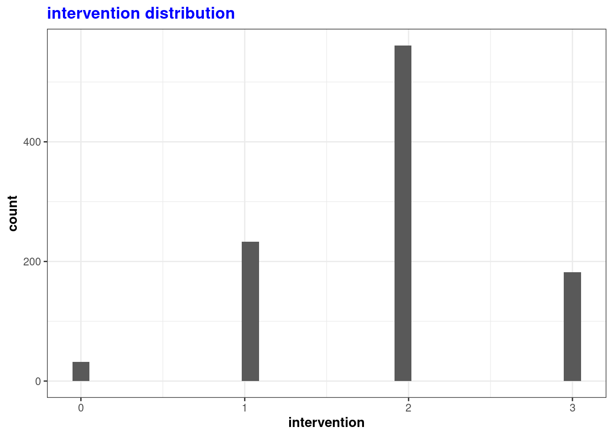
We can also review the distribution of our other variables to ensure normal distribution for use in subsequent tests as well as check for potential outliers. Control variables nonwhite, soc_capital_ma, evangelical_pop, pc_inc_ann, gini_coef, hsdiploma, and co2 are normally distributed.
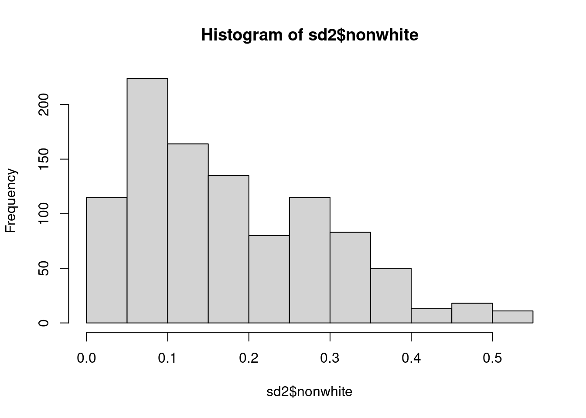
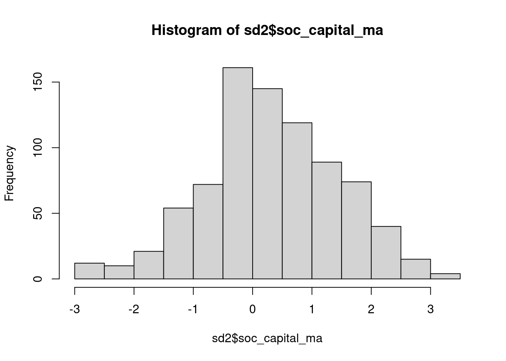
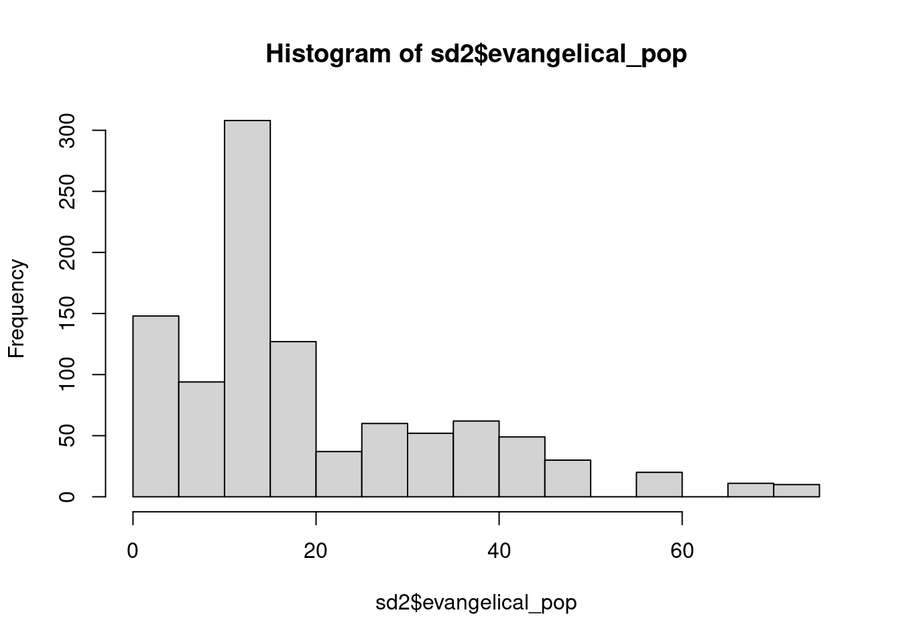
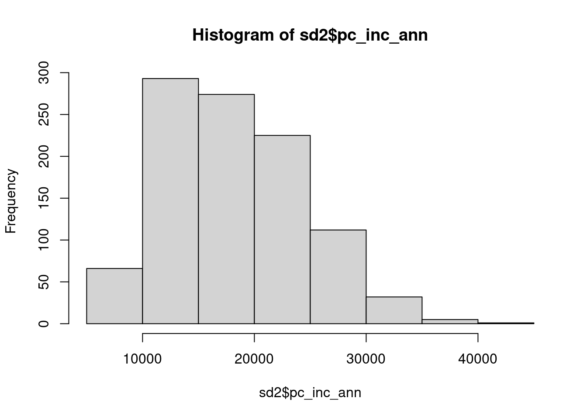
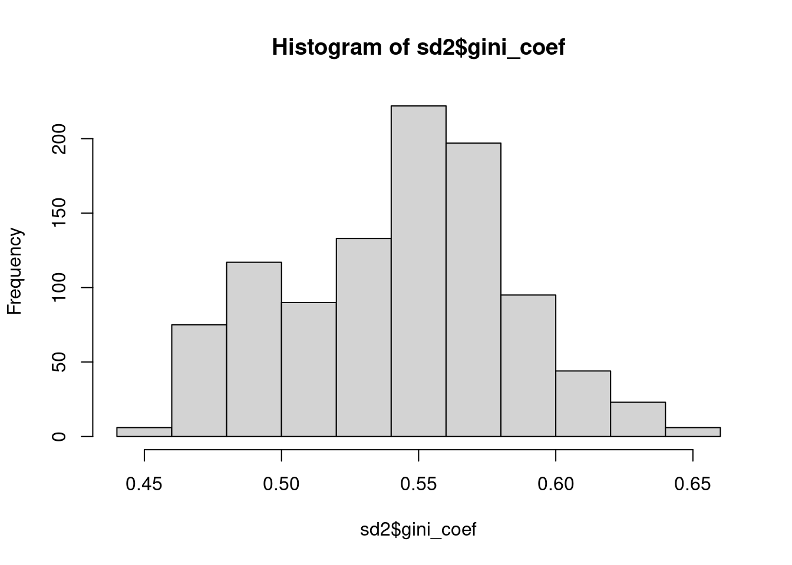
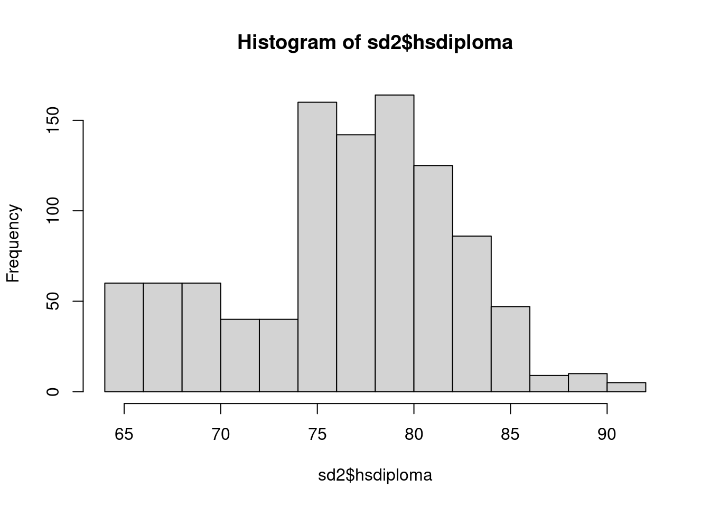
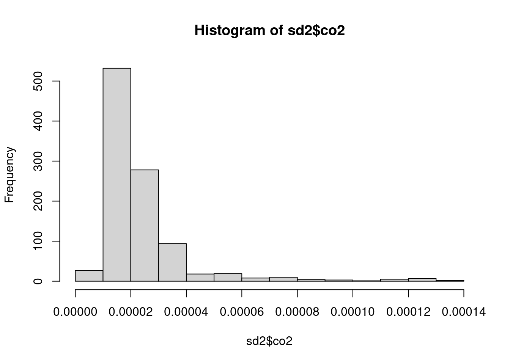
Response variables are also linear but st_ec and st_soc are only avaliable for the year 2000
We can also begin to look more closely at the interaction between our main explanatory variable, intervention, and our outcome variable ideo. A box plot helps better visualize the range of ideology scores per intervention score. We can observe what looks like a slightly positive linear trend with an increase in the number of interventions per state slightly associated with a more liberal state population. Outliers in ideology are also notably present for states scoring in the middle of the intervention score range.
When using a heatmap instead we can better observe the overall distribution of ideology and intervention scores for all states within the time period 1980 - 2000. There is a strong single cluster of states’ scores around a 2 in intervention score and -.1 in ideology score. This strong central tendency is likely a consequence of a lack of significant change in both measures over the time period; most states populations and their political ideology distribution had remained relatively the same.
Warning: Computation failed in `stat_binhex()`
Caused by error in `compute_group()`:
! The package `hexbin` is required for `stat_binhex()`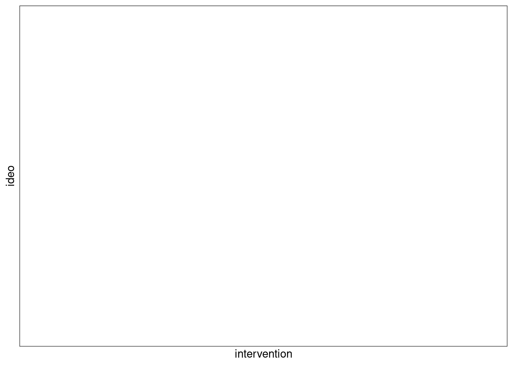
Going a step further we can fit a simple liner regression line with ideology and intervention scores. The confidence interval shown is relatively narrow due to the minimal variation in score.
`geom_smooth()` using formula = 'y ~ x'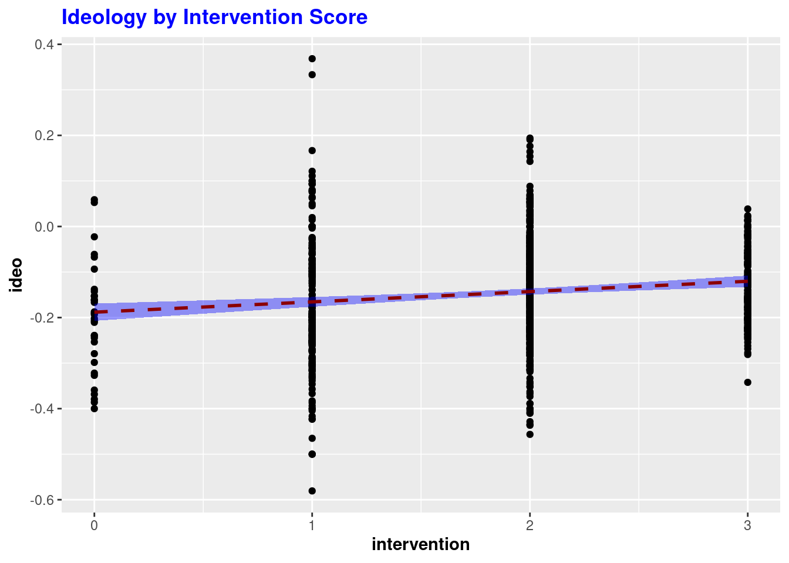
This scatter plot lets us take a closer look at the distribution of ideo by year which also shows a strong central tendency with few outliers around the early and late 1980s.
`geom_smooth()` using formula = 'y ~ x'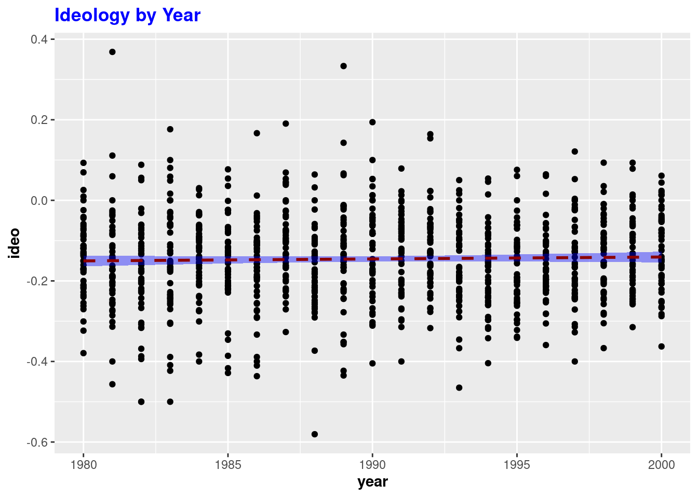
Looking at the distribution of intervention scores for states by years shows a positive liner relationship with most states scoring 2 on the intervention scale.
`geom_smooth()` using formula = 'y ~ x'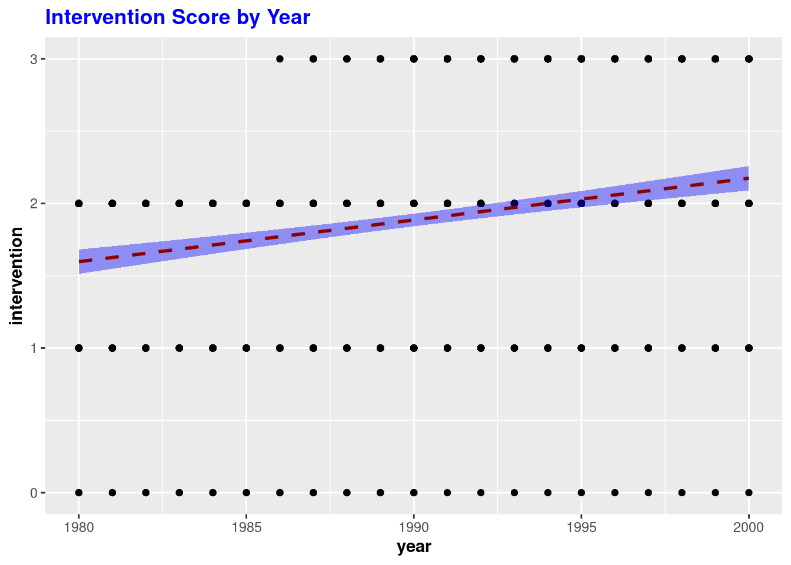
The preferred model for our analysis this a fixed-effects model which takes advantage of the panel data to provided state-by-state coefficients which account for all in-between state effects. According to the results of the model, the effect of intervention score on ideology score is not statistically significant and We fail to reject the null Hypothesis at the 95% confidence level. Although a small, positive relationship was indicated the p-value of 0.77 was too great for significance. The model’s adjusted R squared value 0.544 indicates that almost 50% of the relevant factors that go into determining ideology are not accounted for by the model. This suggest new variables may need to be included to fully capture the factors which go into determining political ideology.
Oneway (individual) effect Within Model
Call:
plm(formula = ideo ~ intervention + evangelical_pop + pc_inc_ann +
hsdiploma + soc_capital_ma + nonwhite + gini_coef + state +
year, data = sd2Panel, model = "within")
Balanced Panel: n = 17, T = 48, N = 816
Residuals:
Min. 1st Qu. Median 3rd Qu. Max.
-0.3606493 -0.0329267 -0.0010003 0.0341312 0.3773551
Coefficients:
Estimate Std. Error t-value Pr(>|t|)
intervention 3.1523e-03 1.0884e-02 0.2896 0.7721821
evangelical_pop -6.9055e-04 8.8164e-04 -0.7833 0.4337211
pc_inc_ann 6.3655e-07 4.1538e-06 0.1532 0.8782472
hsdiploma 2.0126e-03 3.9309e-03 0.5120 0.6088097
soc_capital_ma -1.9225e-03 5.3729e-03 -0.3578 0.7205794
nonwhite 2.4230e-01 2.9256e-01 0.8282 0.4078061
gini_coef 4.3459e-01 2.6367e-01 1.6482 0.0997274 .
stateArizona 6.8455e-02 6.0923e-02 1.1236 0.2615275
stateArkansas 5.3069e-02 3.6005e-02 1.4739 0.1409216
stateCalifornia 9.0401e-02 7.6051e-02 1.1887 0.2349360
stateColorado 1.0988e-01 8.3550e-02 1.3151 0.1888712
stateConnecticut 1.6842e-01 9.1193e-02 1.8469 0.0651610 .
stateDelaware 1.3141e-01 6.7563e-02 1.9450 0.0521568 .
stateFlorida 6.3115e-02 5.1412e-02 1.2276 0.2199708
stateGeorgia 3.8708e-02 3.5026e-02 1.1051 0.2694627
stateIdaho 1.5597e-02 7.3825e-02 0.2113 0.8327372
stateIllinois 1.3015e-01 6.0359e-02 2.1563 0.0313771 *
stateIndiana 9.3393e-02 6.9966e-02 1.3348 0.1823368
stateIowa 1.1803e-01 8.9739e-02 1.3153 0.1888266
stateKansas 4.9707e-02 7.8277e-02 0.6350 0.5256108
stateKentucky 1.5459e-01 6.4445e-02 2.3987 0.0166970 *
stateLouisiana -2.8812e-02 3.8569e-02 -0.7470 0.4552823
stateMaine 1.9591e-01 9.4837e-02 2.0657 0.0392009 *
stateMaryland 1.5557e-01 7.1890e-02 2.1640 0.0307842 *
stateMassachusetts 2.5422e-01 9.0411e-02 2.8118 0.0050565 **
stateMichigan 1.4179e-01 6.4065e-02 2.2132 0.0271889 *
stateMinnesota 1.6755e-01 9.2965e-02 1.8022 0.0719114 .
stateMississippi -3.5136e-02 4.3870e-02 -0.8009 0.4234361
stateMissouri 1.1821e-01 5.9439e-02 1.9888 0.0470925 *
stateMontana 7.4374e-02 8.3072e-02 0.8953 0.3709179
stateNebraska 6.0741e-02 8.6021e-02 0.7061 0.4803327
stateNevada 1.2114e-01 6.5137e-02 1.8597 0.0633225 .
stateNew Hampshire 2.0056e-01 1.0588e-01 1.8941 0.0585949 .
stateNew Jersey 1.5630e-01 7.5005e-02 2.0838 0.0375167 *
stateNew Mexico 1.9592e-02 8.6120e-02 0.2275 0.8200995
stateNew York 1.6040e-01 6.5717e-02 2.4408 0.0148859 *
stateNorth Carolina 4.3252e-02 3.6074e-02 1.1990 0.2309233
stateNorth Dakota 5.6268e-02 8.0138e-02 0.7021 0.4828120
stateOhio 1.5090e-01 6.8821e-02 2.1926 0.0286435 *
stateOklahoma -6.9764e-03 4.4751e-02 -0.1559 0.8761608
stateOregon 1.8116e-01 8.3535e-02 2.1687 0.0304248 *
statePennsylvania 1.4323e-01 7.2239e-02 1.9827 0.0477695 *
stateRhode Island 2.8417e-01 7.5316e-02 3.7731 0.0001741 ***
stateSouth Carolina 1.0060e-02 3.1106e-02 0.3234 0.7464689
stateSouth Dakota -1.7450e-02 7.5292e-02 -0.2318 0.8167791
stateTennessee 8.2561e-02 4.1090e-02 2.0093 0.0448658 *
stateTexas -3.3336e-02 5.5273e-02 -0.6031 0.5466121
stateUtah 5.9597e-02 8.6356e-02 0.6901 0.4903280
stateVermont 2.9511e-01 9.8212e-02 3.0048 0.0027466 **
stateVirginia 7.2893e-02 5.6168e-02 1.2978 0.1947677
stateWashington 1.8538e-01 8.5889e-02 2.1583 0.0312200 *
stateWest Virginia 1.8331e-01 8.0615e-02 2.2739 0.0232561 *
stateWisconsin 1.3657e-01 7.8996e-02 1.7288 0.0842663 .
stateWyoming 6.0622e-02 8.6436e-02 0.7014 0.4832999
---
Signif. codes: 0 '***' 0.001 '**' 0.01 '*' 0.05 '.' 0.1 ' ' 1
Total Sum of Squares: 8.9987
Residual Sum of Squares: 3.753
R-Squared: 0.58294
Adj. R-Squared: 0.54375
F-statistic: 19.2832 on 54 and 745 DF, p-value: < 2.22e-16Regular Pooled OLS Model - We first look at the regular pooled OLS model, this time removing state to enable us to focus on the effects of the other control variables. The model results in an adjusted R squared of .686 and p-value indicating statistical significance. One shortcoming of this model however is that it does not take advantage of the panel effects from the data set
Call:
lm(formula = ideo ~ policypriorityscore + intervention + nonwhite +
soc_capital_ma + evangelical_pop + pc_inc_ann + gini_coef +
hsdiploma + co2 + st_ec + st_soc + year, data = sd2)
Residuals:
Min 1Q Median 3Q Max
-0.101887 -0.035750 -0.003132 0.035156 0.165705
Coefficients: (1 not defined because of singularities)
Estimate Std. Error t value Pr(>|t|)
(Intercept) -1.596e-01 4.123e-01 -0.387 0.701081
policypriorityscore -4.162e-01 1.900e-01 -2.190 0.035263 *
intervention 2.112e-02 1.342e-02 1.574 0.124413
nonwhite 1.247e-01 1.101e-01 1.133 0.265053
soc_capital_ma -1.032e-02 2.742e-02 -0.376 0.708995
evangelical_pop -6.954e-04 9.144e-04 -0.760 0.452103
pc_inc_ann 6.690e-06 3.960e-06 1.689 0.100020
gini_coef -9.154e-01 4.579e-01 -1.999 0.053414 .
hsdiploma 3.047e-03 4.034e-03 0.755 0.455058
co2 2.413e+03 6.114e+02 3.947 0.000364 ***
st_ec 1.504e-01 1.693e-01 0.889 0.380193
st_soc 3.256e-01 1.273e-01 2.559 0.014985 *
year NA NA NA NA
---
Signif. codes: 0 '***' 0.001 '**' 0.01 '*' 0.05 '.' 0.1 ' ' 1
Residual standard error: 0.05763 on 35 degrees of freedom
(961 observations deleted due to missingness)
Multiple R-squared: 0.7614, Adjusted R-squared: 0.6864
F-statistic: 10.15 on 11 and 35 DF, p-value: 5.834e-08The chart below shows the same model using all variables and resulting state coefficients indicating the variance in ideo score by state. The intervention score is also shown to be slightly negatively correlated with ideology score with p-value indicating statistical significance at the 95% confidence level. Although this chart provides some useful information its predictive ability as indicated by R squared score of .472 indicates much is left unexplained by this model.
m1 <- lm(ideo ~ intervention, data = sd2)
m2 <- lm(ideo ~ intervention + state, data = sd2)
m3 <- lm(ideo ~ intervention + state + year, data = sd2)
m4 <- lm(ideo ~ intervention + state + year + st_ec, data = sd2)
m5 <- lm(ideo ~ intervention + state + year + st_ec + st_soc, data = sd2)
m6 <- lm(ideo ~ intervention + state + year + st_ec + st_soc + policypriorityscore, data = sd2)
m7 <- lm(ideo ~ intervention + state + year + st_ec + st_soc + policypriorityscore + nonwhite, data = sd2)
m8 <- lm(ideo ~ intervention + state + year + st_ec + st_soc + policypriorityscore + nonwhite + soc_capital_ma, data = sd2)
m9 <- lm(ideo ~ intervention + state + year + st_ec + st_soc + policypriorityscore + nonwhite + soc_capital_ma + evangelical_pop, data = sd2)
m10 <- lm(ideo ~ intervention + state + year + st_ec + st_soc + policypriorityscore + nonwhite + soc_capital_ma + evangelical_pop + pc_inc_ann, data = sd2)
m11 <- lm(ideo ~ intervention + state + year + st_ec + st_soc + policypriorityscore + nonwhite + soc_capital_ma + evangelical_pop + pc_inc_ann + gini_coef, data = sd2)
m12 <- lm(ideo ~ intervention + state + year + st_ec + st_soc + policypriorityscore + nonwhite + soc_capital_ma + evangelical_pop + pc_inc_ann + gini_coef + hsdiploma, data = sd2)
m13 <- lm(ideo ~ intervention + state + year + st_ec + st_soc + policypriorityscore + nonwhite + soc_capital_ma + evangelical_pop + pc_inc_ann + gini_coef + hsdiploma + co2, data = sd2)
stargazer(m1, m2, m3,m4,m5,m6,m7,m8,m9,m10,m11,m12,m13, type = 'text')
====================================================================================================================================================================
Dependent variable:
------------------------------------------------------------------------------------------------------------------------------------------------
ideo
(1) (2) (3) (4) (5) (6) (7) (8) (9) (10) (11) (12) (13)
--------------------------------------------------------------------------------------------------------------------------------------------------------------------
intervention 0.023*** 0.005 0.0002 -0.144 -0.144 -0.144 -0.144 -0.144 -0.144 -0.144 -0.144 -0.144 -0.144
(0.005) (0.008) (0.010)
stateArizona 0.119*** 0.112*** -0.056 -0.056 -0.056 -0.056 -0.056 -0.056 -0.056 -0.056 -0.056 -0.056
(0.028) (0.029)
stateArkansas 0.050** 0.050** -0.097 -0.097 -0.097 -0.097 -0.097 -0.097 -0.097 -0.097 -0.097 -0.097
(0.025) (0.025)
stateCalifornia 0.200*** 0.202*** 0.329 0.329 0.329 0.329 0.329 0.329 0.329 0.329 0.329 0.329
(0.025) (0.025)
stateColorado 0.164*** 0.167*** 0.278 0.278 0.278 0.278 0.278 0.278 0.278 0.278 0.278 0.278
(0.025) (0.025)
stateConnecticut 0.225*** 0.225*** 0.229 0.229 0.229 0.229 0.229 0.229 0.229 0.229 0.229 0.229
(0.025) (0.025)
stateDelaware 0.164*** 0.161*** 0.132 0.132 0.132 0.132 0.132 0.132 0.132 0.132 0.132 0.132
(0.025) (0.026)
stateFlorida 0.124*** 0.128*** 0.249 0.249 0.249 0.249 0.249 0.249 0.249 0.249 0.249 0.249
(0.026) (0.026)
stateGeorgia 0.075*** 0.075*** 0.037 0.037 0.037 0.037 0.037 0.037 0.037 0.037 0.037 0.037
(0.025) (0.025)
stateIdaho -0.009 -0.009 -0.177 -0.177 -0.177 -0.177 -0.177 -0.177 -0.177 -0.177 -0.177 -0.177
(0.025) (0.025)
stateIllinois 0.179*** 0.179*** 0.164 0.164 0.164 0.164 0.164 0.164 0.164 0.164 0.164 0.164
(0.025) (0.025)
stateIndiana 0.088*** 0.091*** 0.137 0.137 0.137 0.137 0.137 0.137 0.137 0.137 0.137 0.137
(0.025) (0.025)
stateIowa 0.115*** 0.114*** 0.071 0.071 0.071 0.071 0.071 0.071 0.071 0.071 0.071 0.071
(0.025) (0.025)
stateKansas 0.075*** 0.075*** -0.081 -0.081 -0.081 -0.081 -0.081 -0.081 -0.081 -0.081 -0.081 -0.081
(0.025) (0.025)
stateKentucky 0.111*** 0.113*** 0.140 0.140 0.140 0.140 0.140 0.140 0.140 0.140 0.140 0.140
(0.025) (0.026)
stateLouisiana 0.019 0.021 0.122 0.122 0.122 0.122 0.122 0.122 0.122 0.122 0.122 0.122
(0.025) (0.026)
stateMaine 0.171*** 0.171*** 0.171 0.171 0.171 0.171 0.171 0.171 0.171 0.171 0.171 0.171
(0.025) (0.025)
stateMaryland 0.216*** 0.216*** 0.247 0.247 0.247 0.247 0.247 0.247 0.247 0.247 0.247 0.247
(0.025) (0.025)
stateMassachusetts 0.278*** 0.278*** 0.198 0.198 0.198 0.198 0.198 0.198 0.198 0.198 0.198 0.198
(0.025) (0.025)
stateMichigan 0.157*** 0.157*** 0.096 0.096 0.096 0.096 0.096 0.096 0.096 0.096 0.096 0.096
(0.025) (0.025)
stateMinnesota 0.158*** 0.161*** 0.283 0.283 0.283 0.283 0.283 0.283 0.283 0.283 0.283 0.283
(0.025) (0.026)
stateMississippi 0.002 -0.003 -0.246 -0.246 -0.246 -0.246 -0.246 -0.246 -0.246 -0.246 -0.246 -0.246
(0.026) (0.027)
stateMissouri 0.107*** 0.110*** 0.177 0.177 0.177 0.177 0.177 0.177 0.177 0.177 0.177 0.177
(0.025) (0.025)
stateMontana 0.111*** 0.106*** -0.211 -0.211 -0.211 -0.211 -0.211 -0.211 -0.211 -0.211 -0.211 -0.211
(0.026) (0.027)
stateNebraska 0.071*** 0.071***
(0.025) (0.025)
stateNevada 0.212*** 0.211*** 0.045 0.045 0.045 0.045 0.045 0.045 0.045 0.045 0.045 0.045
(0.025) (0.025)
stateNew Hampshire 0.194*** 0.194*** 0.112 0.112 0.112 0.112 0.112 0.112 0.112 0.112 0.112 0.112
(0.025) (0.025)
stateNew Jersey 0.220*** 0.222*** 0.292 0.292 0.292 0.292 0.292 0.292 0.292 0.292 0.292 0.292
(0.025) (0.025)
stateNew Mexico 0.118*** 0.113*** -0.082 -0.082 -0.082 -0.082 -0.082 -0.082 -0.082 -0.082 -0.082 -0.082
(0.026) (0.027)
stateNew York 0.234*** 0.237*** 0.353 0.353 0.353 0.353 0.353 0.353 0.353 0.353 0.353 0.353
(0.025) (0.026)
stateNorth Carolina 0.048* 0.051** 0.100 0.100 0.100 0.100 0.100 0.100 0.100 0.100 0.100 0.100
(0.025) (0.026)
stateNorth Dakota 0.056* 0.046 -0.309 -0.309 -0.309 -0.309 -0.309 -0.309 -0.309 -0.309 -0.309 -0.309
(0.030) (0.031)
stateOhio 0.154*** 0.154*** 0.025 0.025 0.025 0.025 0.025 0.025 0.025 0.025 0.025 0.025
(0.025) (0.025)
stateOklahoma 0.0001 -0.002 -0.079 -0.079 -0.079 -0.079 -0.079 -0.079 -0.079 -0.079 -0.079 -0.079
(0.025) (0.025)
stateOregon 0.181*** 0.184*** 0.247 0.247 0.247 0.247 0.247 0.247 0.247 0.247 0.247 0.247
(0.025) (0.026)
statePennsylvania 0.158*** 0.158*** 0.022 0.022 0.022 0.022 0.022 0.022 0.022 0.022 0.022 0.022
(0.025) (0.025)
stateRhode Island 0.250*** 0.250*** 0.137 0.137 0.137 0.137 0.137 0.137 0.137 0.137 0.137 0.137
(0.025) (0.025)
stateSouth Carolina 0.035 0.035 -0.001 -0.001 -0.001 -0.001 -0.001 -0.001 -0.001 -0.001 -0.001 -0.001
(0.025) (0.025)
stateSouth Dakota -0.009 -0.014 -0.208 -0.208 -0.208 -0.208 -0.208 -0.208 -0.208 -0.208 -0.208 -0.208
(0.026) (0.027)
stateTennessee 0.069*** 0.073*** 0.129 0.129 0.129 0.129 0.129 0.129 0.129 0.129 0.129 0.129
(0.025) (0.026)
stateTexas 0.047* 0.042 -0.179 -0.179 -0.179 -0.179 -0.179 -0.179 -0.179 -0.179 -0.179 -0.179
(0.026) (0.027)
stateUtah 0.023 0.018 -0.212 -0.212 -0.212 -0.212 -0.212 -0.212 -0.212 -0.212 -0.212 -0.212
(0.026) (0.027)
stateVermont 0.260*** 0.255*** 0.061 0.061 0.061 0.061 0.061 0.061 0.061 0.061 0.061 0.061
(0.026) (0.027)
stateVirginia 0.087*** 0.089*** 0.183 0.183 0.183 0.183 0.183 0.183 0.183 0.183 0.183 0.183
(0.025) (0.025)
stateWashington 0.216*** 0.211*** -0.031 -0.031 -0.031 -0.031 -0.031 -0.031 -0.031 -0.031 -0.031 -0.031
(0.026) (0.027)
stateWest Virginia 0.139*** 0.142*** 0.343 0.343 0.343 0.343 0.343 0.343 0.343 0.343 0.343 0.343
(0.025) (0.026)
stateWisconsin 0.130*** 0.130*** 0.036 0.036 0.036 0.036 0.036 0.036 0.036 0.036 0.036 0.036
(0.025) (0.025)
stateWyoming 0.085*** 0.080***
(0.026) (0.027)
year 0.0005
(0.001)
st_ec
st_soc
policypriorityscore
nonwhite
soc_capital_ma
evangelical_pop
pc_inc_ann
gini_coef
hsdiploma
co2
Constant -0.188*** -0.278*** -1.216 0.102 0.102 0.102 0.102 0.102 0.102 0.102 0.102 0.102 0.102
(0.010) (0.024) (0.991)
--------------------------------------------------------------------------------------------------------------------------------------------------------------------
Observations 1,008 1,008 1,008 47 47 47 47 47 47 47 47 47 47
R2 0.022 0.497 0.498 1.000 1.000 1.000 1.000 1.000 1.000 1.000 1.000 1.000 1.000
Adjusted R2 0.021 0.472 0.472
Residual Std. Error 0.110 (df = 1006) 0.081 (df = 959) 0.081 (df = 958)
F Statistic 22.444*** (df = 1; 1006) 19.744*** (df = 48; 959) 19.357*** (df = 49; 958)
====================================================================================================================================================================
Note: *p<0.1; **p<0.05; ***p<0.01AIC - AIC testing can be used to check for the preferred version of the OLS model but are inconclusive after the third model version.
[1] -1586.701[1] -2163.191[1] -2162.135[1] -Inf[1] -Inf[1] -Inf[1] -Inf[1] -Inf[1] -Inf[1] -Inf[1] -Inf[1] -Inf[1] -InfFixed Effects Model - In comparison, utilizing the full fixed effects model takes advantage of the time distribution of measures. The resulting model, with year 2000 metrics excluded, provides p-values for all states and control variables. Although the adjust R squared is somewhat lower at 0.543 the fixed effects model has a higher F-statistic of 19.28 compared to the OLS model’s 10.15.
Oneway (individual) effect Within Model
Call:
plm(formula = ideo ~ intervention + evangelical_pop + pc_inc_ann +
hsdiploma + soc_capital_ma + nonwhite + gini_coef + state +
year, data = sd2Panel, model = "within")
Balanced Panel: n = 17, T = 48, N = 816
Residuals:
Min. 1st Qu. Median 3rd Qu. Max.
-0.3606493 -0.0329267 -0.0010003 0.0341312 0.3773551
Coefficients:
Estimate Std. Error t-value Pr(>|t|)
intervention 3.1523e-03 1.0884e-02 0.2896 0.7721821
evangelical_pop -6.9055e-04 8.8164e-04 -0.7833 0.4337211
pc_inc_ann 6.3655e-07 4.1538e-06 0.1532 0.8782472
hsdiploma 2.0126e-03 3.9309e-03 0.5120 0.6088097
soc_capital_ma -1.9225e-03 5.3729e-03 -0.3578 0.7205794
nonwhite 2.4230e-01 2.9256e-01 0.8282 0.4078061
gini_coef 4.3459e-01 2.6367e-01 1.6482 0.0997274 .
stateArizona 6.8455e-02 6.0923e-02 1.1236 0.2615275
stateArkansas 5.3069e-02 3.6005e-02 1.4739 0.1409216
stateCalifornia 9.0401e-02 7.6051e-02 1.1887 0.2349360
stateColorado 1.0988e-01 8.3550e-02 1.3151 0.1888712
stateConnecticut 1.6842e-01 9.1193e-02 1.8469 0.0651610 .
stateDelaware 1.3141e-01 6.7563e-02 1.9450 0.0521568 .
stateFlorida 6.3115e-02 5.1412e-02 1.2276 0.2199708
stateGeorgia 3.8708e-02 3.5026e-02 1.1051 0.2694627
stateIdaho 1.5597e-02 7.3825e-02 0.2113 0.8327372
stateIllinois 1.3015e-01 6.0359e-02 2.1563 0.0313771 *
stateIndiana 9.3393e-02 6.9966e-02 1.3348 0.1823368
stateIowa 1.1803e-01 8.9739e-02 1.3153 0.1888266
stateKansas 4.9707e-02 7.8277e-02 0.6350 0.5256108
stateKentucky 1.5459e-01 6.4445e-02 2.3987 0.0166970 *
stateLouisiana -2.8812e-02 3.8569e-02 -0.7470 0.4552823
stateMaine 1.9591e-01 9.4837e-02 2.0657 0.0392009 *
stateMaryland 1.5557e-01 7.1890e-02 2.1640 0.0307842 *
stateMassachusetts 2.5422e-01 9.0411e-02 2.8118 0.0050565 **
stateMichigan 1.4179e-01 6.4065e-02 2.2132 0.0271889 *
stateMinnesota 1.6755e-01 9.2965e-02 1.8022 0.0719114 .
stateMississippi -3.5136e-02 4.3870e-02 -0.8009 0.4234361
stateMissouri 1.1821e-01 5.9439e-02 1.9888 0.0470925 *
stateMontana 7.4374e-02 8.3072e-02 0.8953 0.3709179
stateNebraska 6.0741e-02 8.6021e-02 0.7061 0.4803327
stateNevada 1.2114e-01 6.5137e-02 1.8597 0.0633225 .
stateNew Hampshire 2.0056e-01 1.0588e-01 1.8941 0.0585949 .
stateNew Jersey 1.5630e-01 7.5005e-02 2.0838 0.0375167 *
stateNew Mexico 1.9592e-02 8.6120e-02 0.2275 0.8200995
stateNew York 1.6040e-01 6.5717e-02 2.4408 0.0148859 *
stateNorth Carolina 4.3252e-02 3.6074e-02 1.1990 0.2309233
stateNorth Dakota 5.6268e-02 8.0138e-02 0.7021 0.4828120
stateOhio 1.5090e-01 6.8821e-02 2.1926 0.0286435 *
stateOklahoma -6.9764e-03 4.4751e-02 -0.1559 0.8761608
stateOregon 1.8116e-01 8.3535e-02 2.1687 0.0304248 *
statePennsylvania 1.4323e-01 7.2239e-02 1.9827 0.0477695 *
stateRhode Island 2.8417e-01 7.5316e-02 3.7731 0.0001741 ***
stateSouth Carolina 1.0060e-02 3.1106e-02 0.3234 0.7464689
stateSouth Dakota -1.7450e-02 7.5292e-02 -0.2318 0.8167791
stateTennessee 8.2561e-02 4.1090e-02 2.0093 0.0448658 *
stateTexas -3.3336e-02 5.5273e-02 -0.6031 0.5466121
stateUtah 5.9597e-02 8.6356e-02 0.6901 0.4903280
stateVermont 2.9511e-01 9.8212e-02 3.0048 0.0027466 **
stateVirginia 7.2893e-02 5.6168e-02 1.2978 0.1947677
stateWashington 1.8538e-01 8.5889e-02 2.1583 0.0312200 *
stateWest Virginia 1.8331e-01 8.0615e-02 2.2739 0.0232561 *
stateWisconsin 1.3657e-01 7.8996e-02 1.7288 0.0842663 .
stateWyoming 6.0622e-02 8.6436e-02 0.7014 0.4832999
---
Signif. codes: 0 '***' 0.001 '**' 0.01 '*' 0.05 '.' 0.1 ' ' 1
Total Sum of Squares: 8.9987
Residual Sum of Squares: 3.753
R-Squared: 0.58294
Adj. R-Squared: 0.54375
F-statistic: 19.2832 on 54 and 745 DF, p-value: < 2.22e-16We can also drop the state variable to focus on the influence of control variables regardless of state.This results in intervention having a very slightly positive but statistically insignification effect.
Oneway (individual) effect Within Model
Call:
plm(formula = ideo ~ intervention + evangelical_pop + pc_inc_ann +
hsdiploma + soc_capital_ma + nonwhite + gini_coef + year,
data = sd2Panel, model = "within")
Balanced Panel: n = 17, T = 48, N = 816
Residuals:
Min. 1st Qu. Median 3rd Qu. Max.
-0.3716627 -0.0406356 -0.0023436 0.0407772 0.4049772
Coefficients:
Estimate Std. Error t-value Pr(>|t|)
intervention 6.5989e-03 4.5518e-03 1.4498 0.14752
evangelical_pop -2.0889e-03 2.5565e-04 -8.1711 1.206e-15 ***
pc_inc_ann 1.4139e-05 1.4605e-06 9.6807 < 2.2e-16 ***
hsdiploma -1.9246e-03 8.7776e-04 -2.1926 0.02862 *
soc_capital_ma 1.7696e-02 4.5202e-03 3.9149 9.821e-05 ***
nonwhite 3.6588e-02 3.2441e-02 1.1278 0.25973
gini_coef -7.0576e-01 1.3697e-01 -5.1527 3.244e-07 ***
---
Signif. codes: 0 '***' 0.001 '**' 0.01 '*' 0.05 '.' 0.1 ' ' 1
Total Sum of Squares: 8.9987
Residual Sum of Squares: 5.1253
R-Squared: 0.43044
Adj. R-Squared: 0.4139
F-statistic: 85.5068 on 7 and 792 DF, p-value: < 2.22e-16Random Effects Model - When looking at the random effects model without year 2000 indicators or state,year we show a theta near to zero implying the random effects model is closer to OLS model. As theoretically our outcome varies over time as well as across states the random effects model NoT our only choice for a panel data model.
Oneway (individual) effect Random Effect Model
(Swamy-Arora's transformation)
Call:
plm(formula = ideo ~ intervention + evangelical_pop + pc_inc_ann +
hsdiploma + soc_capital_ma + nonwhite + gini_coef, data = sd2Panel,
model = "random")
Balanced Panel: n = 17, T = 48, N = 816
Effects:
var std.dev share
idiosyncratic 0.0064713 0.0804447 0.967
individual 0.0002178 0.0147564 0.033
theta: 0.3816
Residuals:
Min. 1st Qu. Median 3rd Qu. Max.
-0.3823164 -0.0420282 -0.0018682 0.0447659 0.4244008
Coefficients:
Estimate Std. Error z-value Pr(>|z|)
(Intercept) 1.7269e-01 8.9460e-02 1.9304 0.053563 .
intervention 1.4554e-02 4.5657e-03 3.1877 0.001434 **
evangelical_pop -2.6598e-03 2.4835e-04 -10.7100 < 2.2e-16 ***
pc_inc_ann 7.2760e-06 1.1003e-06 6.6127 3.774e-11 ***
hsdiploma -7.5128e-04 8.5211e-04 -0.8817 0.377955
soc_capital_ma 1.8073e-02 4.5549e-03 3.9679 7.250e-05 ***
nonwhite 7.9150e-02 3.1705e-02 2.4965 0.012543 *
gini_coef -7.1896e-01 1.2932e-01 -5.5596 2.704e-08 ***
---
Signif. codes: 0 '***' 0.001 '**' 0.01 '*' 0.05 '.' 0.1 ' ' 1
Total Sum of Squares: 9.1302
Residual Sum of Squares: 5.5883
R-Squared: 0.38793
Adj. R-Squared: 0.38263
Chisq: 512.113 on 7 DF, p-value: < 2.22e-16Hausman test - This test allows us to further compare random and full effect models. The resulting small p-value tells us to reject the null hypothesis and prefer the fixed effects model.
fix <- plm(ideo ~ intervention + evangelical_pop + pc_inc_ann + hsdiploma + soc_capital_ma + nonwhite + gini_coef, data = sd2Panel, model = 'within')
rand <- plm(ideo ~ intervention + evangelical_pop + pc_inc_ann + hsdiploma + soc_capital_ma + nonwhite + gini_coef, data = sd2Panel, model = 'random')
phtest (fix, rand)
Hausman Test
data: ideo ~ intervention + evangelical_pop + pc_inc_ann + hsdiploma + ...
chisq = 67.98, df = 7, p-value = 3.779e-12
alternative hypothesis: one model is inconsistentLagged Independent Variable Model- An alternate approach is to use a to lag intervention score, in this case by one year, to see the effect of one year’s score on the next year’s. Although results show a small positive relationship between intervention and ideo scores this result is not statistically significant; the model as a whole does have a high F-statistic of 71.43 but its predictive power is moderately low due to an adjusted R squared of 0.406.
Oneway (individual) effect Within Model
Call:
plm(formula = ideo ~ intervention + evangelical_pop + pc_inc_ann +
hsdiploma + soc_capital_ma + nonwhite + gini_coef + lag(intervention,
1), data = sd2Panel, model = "within")
Balanced Panel: n = 17, T = 47, N = 799
Residuals:
Min. 1st Qu. Median 3rd Qu. Max.
-0.372238 -0.039706 -0.002639 0.041328 0.388699
Coefficients:
Estimate Std. Error t-value Pr(>|t|)
intervention 2.9611e-03 4.6444e-03 0.6376 0.5239475
evangelical_pop -2.1254e-03 2.6682e-04 -7.9657 5.864e-15 ***
pc_inc_ann 1.4136e-05 1.4742e-06 9.5886 < 2.2e-16 ***
hsdiploma -2.0458e-03 8.8878e-04 -2.3018 0.0216096 *
soc_capital_ma 1.8211e-02 4.5312e-03 4.0190 6.416e-05 ***
nonwhite 5.8050e-02 3.2980e-02 1.7602 0.0787753 .
gini_coef -7.0483e-01 1.3763e-01 -5.1213 3.833e-07 ***
lag(intervention, 1) -1.4630e-02 4.2109e-03 -3.4744 0.0005405 ***
---
Signif. codes: 0 '***' 0.001 '**' 0.01 '*' 0.05 '.' 0.1 ' ' 1
Total Sum of Squares: 8.6782
Residual Sum of Squares: 4.9924
R-Squared: 0.42471
Adj. R-Squared: 0.40687
F-statistic: 71.4269 on 8 and 774 DF, p-value: < 2.22e-16Looking back at the OLS model we can review diagnostic plots below to see if any required assumption are not met. Residuals v. fitted shows relatively constant variance indicating linearity while the Q-Q plot indicates normality is met as points mostly fall along the line. Scale-location indicates a constant variance however Cook’s indications a violation with one influential observation standing out.The effect of this outlier can also be seen through the Levearge and Cook’s Distance v Leverage plots.
Validity - The preferred fixed effects model meets validity assumptions by including relevant variables with valid measures of potential confounds to the impact of policy interventions on policy and political preferences. The data used is publicly available and the tests are replicatable. Although not all variables are ideal representatives of the constructs they represent, as there is some difference between ideology and policy preference and the level of programmatic activity per state agency is not best expressed in dummy variables, the measures selected do cover the overall presence and magnitude of the phonemenon being studied.
Representativeness - The data used is drawn from multiple government sources and includes 928 variables covering data from 1900 to 2016. This enables a wide breath of coverage that can significantly increase the relative representatives of results derived from this data. While there were some missing areas for this study’s variables of interest limiting the time period to 1980-2000 reduced the number of missing values while the large overall sample size helped maintain statistical significance.
Additivity and Linearity - Variables used in the model are independent of one another and are controlled by the model. When state is included in the fixed effects model the coefficient of every state represents the total effect account for variance between states and accounts for all other variables.
Independence of errors - Error terms between observations are independent of one another as the panel data contains discrete values per state per year and not subject is observed repeatedly over time.
Equal variance of errors - As shown by the prior illustrations errors of variables included in the model are equally distributed making it homeostatic.
Normality of errors - Similarly errors are also normally distributed and not related to the distribution of the outcome or predictor variables making logistic regression unneeded.
Ansell, Ben. 2014. “The Political Economy of Ownership.” American Political Science Review 108(02):383{402.
Boehmke, Frederick J., and Paul Skinner. 2012. “State Policy Innovativeness Revisited.” State Politics and Policy Quarterly, 12(3):303-29.
Bueno, Natalia and Nunes, Felipe and Zucco, Cesar, Making the bourgeoisie? Values, voice, and state-provided homeownership (January 7, 2022). SSRN.
Caughey, Devin, and Christopher Warshaw. 2015. “The Dynamics of State Policy Liberalism, 1936–2014.” American Journal of Political Science, September. doi: 10.1111/ajps.12219.
Holland, Alisha C. 2018. “Diminished Expectations: Redistributive preferences in truncated welfare states.” World Politics 70(4):555{594
Jacoby, William G., and Saundra K. Schneider. 2008. “A New Measure of Policy Spending Priorities in the American States.”
Jordan, Marty P. and Matt Grossmann. 2016. The Correlates of State Policy Project v.1.10. East Lansing, MI: Institute for Public Policy and Social Research (IPPSR).
R Markdown Cheat Sheet (2014). R Studio. https://www.rstudio.com/wp-content/uploads/2015/02/rmarkdown-cheatsheet.pdf
Rigby, Elizabeth and Gerald C. Wright. 2013. “Political Parties and Representation of the Poor in the American States.” American Journal of Political Science 57(3): 552-565.
Soss, Joe. 1999. “Lessons of Welfare: Policy Design, Political Learning, and Political Action.” The American Political Science Review 93(2):363{380.
---
title: "Final Project"
author: "Ken Docekal"
desription: "The Impact of State Interventions on Policy Preferences"
date: "12/13/2022"
format:
html:
toc: true
code-fold: true
code-copy: true
code-tools: true
categories:
- finalpart2
- descriptive statistics
- analysis
---
```{r, message=FALSE}
#| label: setup
#| warning: false
library(tidyverse)
knitr::opts_chunk$set(echo = TRUE)
```
```{r, message=FALSE}
library(readr)
library(readxl)
library(stargazer)
library(magrittr)
library(AER)
library(plm)
library(MPV)
```
## Proposal
### Research Question
How much does state policy intervention impact future social and economic value preferences in residents?
While political values often explicitly inform social and economic policy actions taken by governments, policy actions themselves can also affect the development of the values of both program recipients and the greater public. Low-income recipients are assumed to benefit from, and therefore favor, state intervention and redistributive policies while upper income groups are assumed to be against but this is not always true, especially at the program level (Bueno et al.). Authors like Holland note that "the poor only have an economic interest in supporting social expenditures in contexts where they expect policies to redistribute resources or risks in their favor". While many studies look at the impact of policies on direct program participants, less is know about potential spillover effects in terms of subsequent population ideological and policy preferences.
This study seeks to better understand the relationship between policy action and value formation at the sub-national level by looking at the effect of US state policy interventions on residents' subsequent policy preferences. By looking at how differences in US states' social and economic policy intervention from 1980 to 2000 we can see how these factors may shape the subsequent policy values of residents. The dataset "Correlates of State Policy" includes variables which also allow us to better understand the role of differences in policy design and implementation by controlling for variables that may moderate impact, such as the length of policy implementation (Soss) and differences in economic interest (Ansell).
### Hypothesis
Increased state intervention increases US state residents' preference for future interventions in social and economic policy.
This study proposes to build on Bueno et al.'s exploration of the effects of state-provided home ownership on political values and policy preferences by exploring that relationship at the level of US states. While Bueno's research utilizes a natural experiment by collecting data on different participants of a Brazilian housing program, I propose to study the cumulative effects of multiple policy interventions across 20 years in the United States. This will provide insights into the effect of public policy on value differences at the sub-national level and on different subgroups including program non-participants. We will be able to see how this relationship may vary according to state and population characteristics despite differences in policy design and implementation. We will also be able to observe differences between states and population sub-groups. This study can help inform future research on the indirect effects of public policy and the political consequences of policy design.
### Descriptive Statistics
The dataset utilized is from the Correlates of State Policy Project by the Institute for Public Policy and Social Research at Michigan State University. The full dataset, which contains 928 variables and covers data from 1900 to 2016, draws from multiple sources including government agencies and peer-reviewed articles listed in the Sources section. Due to limited data coverage across all years however, this study will focus on the period from 1935 to 2000. Our dataset contains the following variables:
Year 1935 - 2000
State 1935 - 2000
Explanatory Variables
Econdev - Did State adopt Strategic Planning for Economic Development? 1981 -- 1992
Pldvpag - Did State adopt Planning/Development Agency? 1935 -- 1978
Urbrenen - Did State adopt Urban Renewal ? 1941 -- 1952
intervention - Total state intervention program presence
Lacking a specific measure for social policy intervention we look at three different indicators related to direct state policy actions and the effect of these initiatives and agencies through their presence. These three indicators are combined into a single combined score, with 0 indicating no programs active and 3 indication all are present. We are therefore able to account for all measures and associated intensity of program activity.
Control Variables
For control variables we include various common indicators of differences in population characteristics. Hsdiploma is used as a measure of education, Nonwhite for ethnicity, Evangelical_pop guages religiosity, and Soc_capital_ma is a measure of social capital to guage potential non-economic differences in political and policy influence between populations. pc_inc_ann controls for overall state income, poptotal for population, gini_coef for inequality, co2 for pollution, and Policypriorityscore for difference in prefered type of policy provision. also....
Nonwhite - Proportion of the population that is nonwhite 1974 - 2011
Soc_capital_ma - Weighted Moving Average Measure of Social Capital, rate per capita 1984 - 2011
Evangelical_pop - Evangelical Population, rate per capita 1975 - 2013
pc_inc_ann - Per Capita Annual Income, rate per capita 1929 - 2011
Gini_coef - Gini Coefficient 1917 - 2013
Hsdiploma - High School Diploma, rate per capita 1975 - 2006
pop_annual - Total State Population, measured annually 1929 -- 2012
Policypriorityscore - State Policy Priority Score - collective goods (e.g., education and highways) v particularized benefits (e.g., health care and welfare) 1982-2005
Co2 - Total CO2 emissions from fossil-fuels (metric tons), rate per capita 1960 - 2001
co2emissions was transformed to co2 to change the measure from raw tons to ton per state resident. This enables the variable's unit of measure to align with the units of the other variables used.
popfemale - Proportion of the population that is female, only from 1994
newimmig - Proportion of the population that is that newly immigrated, only from 1988
Gender and immigrant proportions are potential variables to control for however these variables are only available for a limited number of years but are used in model testing
Response Variables
While ideo is a useful measure, as conservative and liberal ideologies on can be taken as approximate indicators for support for more or less direct state intervention. The two measures of mean economic and social liberalism lets us get a more nuanced understanding of the details of that political preference as it applies to the key policy areas associated with the subject of our study - policy interventions from social and economic state agencies and initiatives. These measures are used as alternate metrics for the same variable - state resident policy preference. The different metrics provide useful in different tests for relationship significance seen below.
st_ec - Mean Economic Liberalism for All Survey Respondents, 2000
st_soc - Mean Social Liberalism for All Survey Respondents, 2000
ideo - State Ideology Score as yearly measure, giving the proportion of liberal identifiers minus the proportion of conservative identifiers in each state. A positive score indicates a more liberal state citizenry, 1976 - 2011
Reading in data set
```{r, echo=T}
statedata <- read.csv("_data/correlatesofstatepolicyprojectv1_10.csv")
```
Specifying variables
```{r}
statedata1 = subset(statedata, select = c(state, year, policypriorityscore, econdev, pldvpag, urbrenen, nonwhite, soc_capital_ma, evangelical_pop, pc_inc_ann, gini_coef, hsdiploma, co2emissions, ideo,st_ec, st_soc, pop_annual))
```
Transforming co2 emission variable from raw tons to ton per state resident
```{r}
statedata1$co2 <- statedata1$co2emissions / statedata1$pop_annual
```
Creating new intervention variable as an aggregate measure of state social policy interventions
```{r}
statedata1$intervention <- statedata1$econdev + statedata1$pldvpag + statedata1$urbrenen
```
Creating data subset with new variables, removing pre-transformation measures and pop_annual, since it is no longer needed
```{r}
sd = subset(statedata1, select = c(state, year, policypriorityscore, intervention, nonwhite, soc_capital_ma, evangelical_pop, pc_inc_ann, gini_coef, hsdiploma, co2, ideo,st_ec, st_soc))
```
Due to missing observations for multiple variables we will set the data range as 1980 to 2000.NAs are reduced as list wise removal of observations that are missing completely at random analysis will be unbiased.
```{r}
sd1 <- subset(sd, year>1979 & year<2001, na.rm = TRUE )
```
Excluding District of Columbia, Alaska, Hawaii to further reduce NAs
```{r}
sdd <- subset(sd1, state != "District of Columbia", na.rm = TRUE )
sda <- subset(sdd, state != "Alaska", na.rm = TRUE )
sd2 <- subset(sda, state != "Hawaii", na.rm = TRUE )
```
This summary table shows the mean, median, and range of the variables included in our model. Intervention, the main predictor variable, has results that indicate that the median state had two out of three measured social policy agencies in operation in the time period 1980 to 2000. Ideology scores indicate that the median state in the same time period had a slightly more conservative population with a score of -.146.
```{r}
summary(sd2)
```
We can better observe the distribution of key variables through the use of bargraphs. While explanatory variables like econdev, pldvpag, and urbrenen are dummy variables our aggregate metric of intervention has a normal distribution.
```{r}
ggplot(data = sd2) +
geom_histogram(mapping = aes(x = intervention))+
theme_bw()+
ggtitle("intervention distribution")+
theme(plot.title = element_text(face = "bold", colour = "blue"))+
theme(axis.title = element_text(face = "bold"))
```
We can also review the distribution of our other variables to ensure normal distribution for use in subsequent tests as well as check for potential outliers. Control variables nonwhite, soc_capital_ma, evangelical_pop, pc_inc_ann, gini_coef, hsdiploma, and co2 are normally distributed.
```{r}
hist(sd2$nonwhite)
hist(sd2$soc_capital_ma)
hist(sd2$soc_capital_ma)
hist(sd2$evangelical_pop)
hist(sd2$pc_inc_ann)
hist(sd2$gini_coef)
hist(sd2$hsdiploma)
hist(sd2$co2)
```
Response variables are also linear but st_ec and st_soc are only avaliable for the year 2000
```{r}
hist(sd2$ideo)
hist(sd2$st_ec)
hist(sd2$st_soc)
```
We can also begin to look more closely at the interaction between our main explanatory variable, intervention, and our outcome variable ideo. A box plot helps better visualize the range of ideology scores per intervention score. We can observe what looks like a slightly positive linear trend with an increase in the number of interventions per state slightly associated with a more liberal state population. Outliers in ideology are also notably present for states scoring in the middle of the intervention score range.
```{r}
boxplot(ideo ~ intervention, data = sd2)
```
When using a heatmap instead we can better observe the overall distribution of ideology and intervention scores for all states within the time period 1980 - 2000. There is a strong single cluster of states' scores around a 2 in intervention score and -.1 in ideology score. This strong central tendency is likely a consequence of a lack of significant change in both measures over the time period; most states populations and their political ideology distribution had remained relatively the same.
```{r}
ggplot(data = sd2) +
geom_hex(mapping = aes(x = intervention, y = ideo))+
theme_bw()
```
Going a step further we can fit a simple liner regression line with ideology and intervention scores. The confidence interval shown is relatively narrow due to the minimal variation in score.
```{r}
ggplot(sd2, aes(x=intervention, y=ideo)) + geom_point() + geom_smooth(method=lm, linetype="dashed",
color="darkred", fill="blue")+
ggtitle("Ideology by Intervention Score")+
theme(plot.title = element_text(face = "bold", colour = "blue"))+
theme(axis.title = element_text(face = "bold"))
```
This scatter plot lets us take a closer look at the distribution of ideo by year which also shows a strong central tendency with few outliers around the early and late 1980s.
```{r}
ggplot(sd2, aes(x=year, y=ideo)) + geom_point() + geom_smooth(method=lm, linetype="dashed",
color="darkred", fill="blue")+
ggtitle("Ideology by Year")+
theme(plot.title = element_text(face = "bold", colour = "blue"))+
theme(axis.title = element_text(face = "bold"))
```
Looking at the distribution of intervention scores for states by years shows a positive liner relationship with most states scoring 2 on the intervention scale.
```{r}
ggplot(sd2, aes(x=year, y=intervention)) + geom_point() + geom_smooth(method=lm, linetype="dashed",
color="darkred", fill="blue")+
ggtitle("Intervention Score by Year")+
theme(plot.title = element_text(face = "bold", colour = "blue"))+
theme(axis.title = element_text(face = "bold"))
```
## Analysis
### Hypothesis testing
The preferred model for our analysis this a fixed-effects model which takes advantage of the panel data to provided state-by-state coefficients which account for all in-between state effects. According to the results of the model, the effect of intervention score on ideology score is not statistically significant and We fail to reject the null Hypothesis at the 95% confidence level. Although a small, positive relationship was indicated the p-value of 0.77 was too great for significance. The model's adjusted R squared value 0.544 indicates that almost 50% of the relevant factors that go into determining ideology are not accounted for by the model. This suggest new variables may need to be included to fully capture the factors which go into determining political ideology.
```{r}
sd2Panel <- pdata.frame(sd2, index = c('year', 'state'))
plm(ideo ~ intervention + evangelical_pop + pc_inc_ann + hsdiploma + soc_capital_ma + nonwhite + gini_coef + state + year, data = sd2Panel, model = 'within') |> summary()
```
### Model Comparisons
Regular Pooled OLS Model - We first look at the regular pooled OLS model, this time removing state to enable us to focus on the effects of the other control variables. The model results in an adjusted R squared of .686 and p-value indicating statistical significance. One shortcoming of this model however is that it does not take advantage of the panel effects from the data set
```{r}
lm(formula = ideo ~ policypriorityscore + intervention + nonwhite + soc_capital_ma + evangelical_pop + pc_inc_ann + gini_coef + hsdiploma + co2 + st_ec +
st_soc + year, data = sd2) |> summary()
```
The chart below shows the same model using all variables and resulting state coefficients indicating the variance in ideo score by state. The intervention score is also shown to be slightly negatively correlated with ideology score with p-value indicating statistical significance at the 95% confidence level. Although this chart provides some useful information its predictive ability as indicated by R squared score of .472 indicates much is left unexplained by this model.
```{r}
m1 <- lm(ideo ~ intervention, data = sd2)
m2 <- lm(ideo ~ intervention + state, data = sd2)
m3 <- lm(ideo ~ intervention + state + year, data = sd2)
m4 <- lm(ideo ~ intervention + state + year + st_ec, data = sd2)
m5 <- lm(ideo ~ intervention + state + year + st_ec + st_soc, data = sd2)
m6 <- lm(ideo ~ intervention + state + year + st_ec + st_soc + policypriorityscore, data = sd2)
m7 <- lm(ideo ~ intervention + state + year + st_ec + st_soc + policypriorityscore + nonwhite, data = sd2)
m8 <- lm(ideo ~ intervention + state + year + st_ec + st_soc + policypriorityscore + nonwhite + soc_capital_ma, data = sd2)
m9 <- lm(ideo ~ intervention + state + year + st_ec + st_soc + policypriorityscore + nonwhite + soc_capital_ma + evangelical_pop, data = sd2)
m10 <- lm(ideo ~ intervention + state + year + st_ec + st_soc + policypriorityscore + nonwhite + soc_capital_ma + evangelical_pop + pc_inc_ann, data = sd2)
m11 <- lm(ideo ~ intervention + state + year + st_ec + st_soc + policypriorityscore + nonwhite + soc_capital_ma + evangelical_pop + pc_inc_ann + gini_coef, data = sd2)
m12 <- lm(ideo ~ intervention + state + year + st_ec + st_soc + policypriorityscore + nonwhite + soc_capital_ma + evangelical_pop + pc_inc_ann + gini_coef + hsdiploma, data = sd2)
m13 <- lm(ideo ~ intervention + state + year + st_ec + st_soc + policypriorityscore + nonwhite + soc_capital_ma + evangelical_pop + pc_inc_ann + gini_coef + hsdiploma + co2, data = sd2)
stargazer(m1, m2, m3,m4,m5,m6,m7,m8,m9,m10,m11,m12,m13, type = 'text')
```
AIC - AIC testing can be used to check for the preferred version of the OLS model but are inconclusive after the third model version.
```{r}
AIC(m1)
AIC(m2)
AIC(m3)
AIC(m4)
AIC(m5)
AIC(m6)
AIC(m7)
AIC(m8)
AIC(m9)
AIC(m10)
AIC(m11)
AIC(m12)
AIC(m13)
```
Fixed Effects Model - In comparison, utilizing the full fixed effects model takes advantage of the time distribution of measures. The resulting model, with year 2000 metrics excluded, provides p-values for all states and control variables. Although the adjust R squared is somewhat lower at 0.543 the fixed effects model has a higher F-statistic of 19.28 compared to the OLS model's 10.15.
```{r}
plm(ideo ~ intervention + evangelical_pop + pc_inc_ann + hsdiploma + soc_capital_ma + nonwhite + gini_coef + state + year, data = sd2Panel, model = 'within') |> summary()
```
We can also drop the state variable to focus on the influence of control variables regardless of state.This results in intervention having a very slightly positive but statistically insignification effect.
```{r}
plm(ideo ~ intervention + evangelical_pop + pc_inc_ann + hsdiploma + soc_capital_ma + nonwhite + gini_coef + year, data = sd2Panel, model = 'within') |> summary()
```
Random Effects Model - When looking at the random effects model without year 2000 indicators or state,year we show a theta near to zero implying the random effects model is closer to OLS model. As theoretically our outcome varies over time as well as across states the random effects model NoT our only choice for a panel data model.
```{r}
plm(ideo ~ intervention + evangelical_pop + pc_inc_ann + hsdiploma + soc_capital_ma + nonwhite + gini_coef, data = sd2Panel, model = 'random') |> summary()
```
Hausman test - This test allows us to further compare random and full effect models. The resulting small p-value tells us to reject the null hypothesis and prefer the fixed effects model.
```{r}
fix <- plm(ideo ~ intervention + evangelical_pop + pc_inc_ann + hsdiploma + soc_capital_ma + nonwhite + gini_coef, data = sd2Panel, model = 'within')
rand <- plm(ideo ~ intervention + evangelical_pop + pc_inc_ann + hsdiploma + soc_capital_ma + nonwhite + gini_coef, data = sd2Panel, model = 'random')
phtest (fix, rand)
```
Lagged Independent Variable Model- An alternate approach is to use a to lag intervention score, in this case by one year, to see the effect of one year's score on the next year's. Although results show a small positive relationship between intervention and ideo scores this result is not statistically significant; the model as a whole does have a high F-statistic of 71.43 but its predictive power is moderately low due to an adjusted R squared of 0.406.
```{r}
plm(ideo ~ intervention + evangelical_pop + pc_inc_ann + hsdiploma + soc_capital_ma + nonwhite + gini_coef + lag(intervention, 1), data = sd2Panel, model = 'within') |> summary()
```
### Diagnostics
Looking back at the OLS model we can review diagnostic plots below to see if any required assumption are not met. Residuals v. fitted shows relatively constant variance indicating linearity while the Q-Q plot indicates normality is met as points mostly fall along the line. Scale-location indicates a constant variance however Cook's indications a violation with one influential observation standing out.The effect of this outlier can also be seen through the Levearge and Cook's Distance v Leverage plots.
```{r}
stEcLm <- lm(formula = ideo ~ policypriorityscore + intervention + nonwhite + soc_capital_ma + evangelical_pop + pc_inc_ann + gini_coef + hsdiploma + co2 + st_ec +
st_soc + year, data = sd2)
```
```{r}
par(mfrow = c(2,3)); plot(stEcLm, which = 1:6)
```
Validity - The preferred fixed effects model meets validity assumptions by including relevant variables with valid measures of potential confounds to the impact of policy interventions on policy and political preferences. The data used is publicly available and the tests are replicatable. Although not all variables are ideal representatives of the constructs they represent, as there is some difference between ideology and policy preference and the level of programmatic activity per state agency is not best expressed in dummy variables, the measures selected do cover the overall presence and magnitude of the phonemenon being studied.
Representativeness - The data used is drawn from multiple government sources and includes 928 variables covering data from 1900 to 2016. This enables a wide breath of coverage that can significantly increase the relative representatives of results derived from this data. While there were some missing areas for this study's variables of interest limiting the time period to 1980-2000 reduced the number of missing values while the large overall sample size helped maintain statistical significance.
Additivity and Linearity - Variables used in the model are independent of one another and are controlled by the model. When state is included in the fixed effects model the coefficient of every state represents the total effect account for variance between states and accounts for all other variables.
Independence of errors - Error terms between observations are independent of one another as the panel data contains discrete values per state per year and not subject is observed repeatedly over time.
Equal variance of errors - As shown by the prior illustrations errors of variables included in the model are equally distributed making it homeostatic.
Normality of errors - Similarly errors are also normally distributed and not related to the distribution of the outcome or predictor variables making logistic regression unneeded.
## Bibliography
Ansell, Ben. 2014. "The Political Economy of Ownership." American Political Science Review 108(02):383{402.
Boehmke, Frederick J., and Paul Skinner. 2012. "State Policy Innovativeness Revisited." State Politics and Policy Quarterly, 12(3):303-29.
Bueno, Natalia and Nunes, Felipe and Zucco, Cesar, Making the bourgeoisie? Values, voice, and state-provided homeownership (January 7, 2022). SSRN.
Caughey, Devin, and Christopher Warshaw. 2015. "The Dynamics of State Policy Liberalism, 1936--2014." American Journal of Political Science, September. doi: 10.1111/ajps.12219.
Holland, Alisha C. 2018. "Diminished Expectations: Redistributive preferences in truncated welfare states." World Politics 70(4):555{594
Jacoby, William G., and Saundra K. Schneider. 2008. "A New Measure of Policy Spending Priorities in the American States."
Jordan, Marty P. and Matt Grossmann. 2016. The Correlates of State Policy Project v.1.10. East Lansing, MI: Institute for Public Policy and Social Research (IPPSR).
R Markdown Cheat Sheet (2014). R Studio. https://www.rstudio.com/wp-content/uploads/2015/02/rmarkdown-cheatsheet.pdf
Rigby, Elizabeth and Gerald C. Wright. 2013. "Political Parties and Representation of the Poor in the American States." American Journal of Political Science 57(3): 552-565.
Soss, Joe. 1999. "Lessons of Welfare: Policy Design, Political Learning, and Political Action." The American Political Science Review 93(2):363{380.